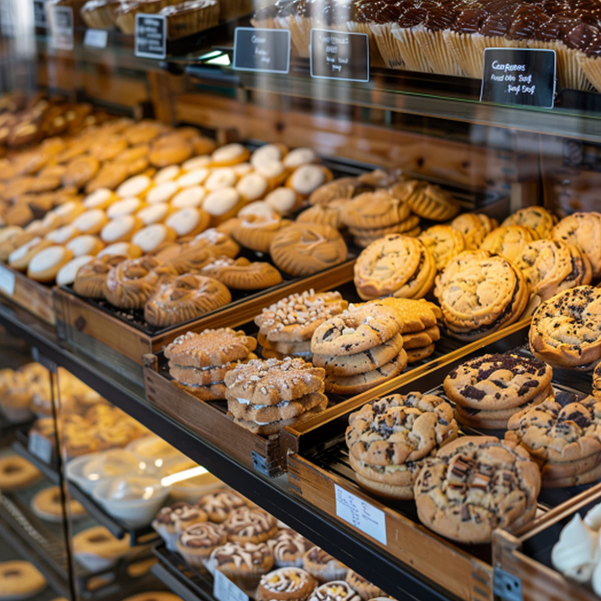

Welcome to North Star Bakery
We are a small neighborhood bakery that bakes everything by hand, every morning. Whether you are grabbing a croissant on your way to work, picking up bread for your family, or planning an event, we are happy to have you here.
Featured Item of the Week

Cookie Sampler
A box of a dozen mixed cookies, including chocolate chunk, iced butter cookies, and sugar crunch. It is perfect for the office, a family movie night, or a party.
What We're Known For
Our neighbors know us for slow-fermented sourdough, flaky pastries, and cookies baked fresh in small batches. We use simple ingredients and take our time, so every loaf tastes the way homemade bread should.
A Message From Our Bakers
Hours and Location
North Star Bakery
123 Main Street, Hometown, NJ 07000
Open Tuesday to Saturday, 7:00 AM to 6:00 PM, and Sunday, 8:00 AM to 3:00 PM. Closed Mondays.